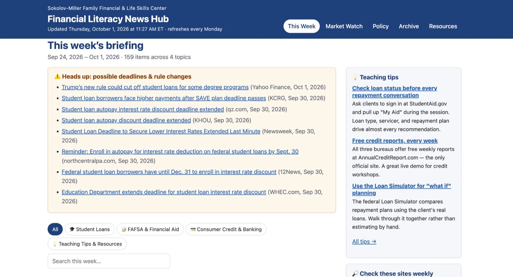
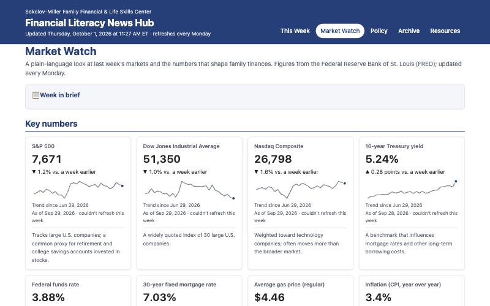

Live 2026 · Sokolov-Miller Family Financial & Life Skills Center
Financial Literacy News Hub
A free briefing site for the center's staff that gathers the week's news on student loans, FAFSA and financial aid, consumer credit and banking, and financial-literacy teaching — and rebuilds itself every Monday morning with no one touching it.


What it does
- This Week: news sorted by topic, with a “Heads up” box for deadlines and rule changes.
- Market Watch: a factual week-in-brief and key numbers with 3-month trends — stocks, rates, mortgages, gas, inflation, unemployment, and credit card APR.
- Policy: federal rules, laws, and bills, plus state-level coverage filterable by state, Pennsylvania first.
- Neutral by design: partisan outlets, charged headlines, and opinion columns are filtered out automatically.
- Searchable archive of every past week and a printable layout for team meetings.
Sources
StudentAid.gov, the Federal Register, CFPB, FTC, the Federal Reserve, FDIC, FRED, BLS, BEA, and others.
How I built it
I built the News Hub with Claude, Anthropic's AI assistant, using Claude Code — a skill set I picked up through Anthropic's Claude Code course. I defined what the center's staff needed, chose the sources and the rules for keeping coverage neutral, and worked with Claude to write, test, and refine the code that fetches the news and builds the site each week.
Built with
Runs at $0 — no paid services, accounts, or API keys.